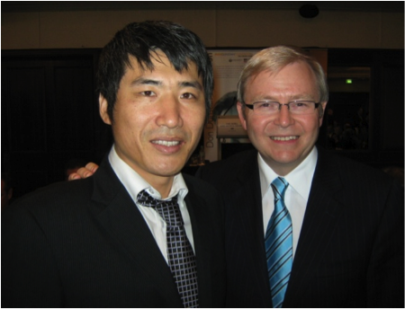

Formal Prime Minster of Australian, Kevin Rudd MP with Dundee KIM, DonDunstan Foundation 31/07/2008
Dundee’s Fight for Respect
At a young age, Dundee began learning boxing simply to protect himself. But with determination and talent he soon became a two time amateur boxing champion representing his home state in South Korea. He received further combat training while serving his country in the national army service in South Korea. Realising the importance of knowledge, Dundee continues his journey not only in boxing but also in studying and absorbing as much information as he can. He has travelled the world and is now a multilingual speaker in Japanese, Chinese, English and his native tongue Korean.
- In 1991 Boxing opened up the opportunity to learn Japanese as well as becoming a boxing trainer in Japan
- In 1994 Studied Mandarin at Beijing Polytechnic University in China
- In 2004 Fully sponsored Permanent Resident Visa by CMS Central Queensland University International Brisbane Campus
- In 2006 Recognition of outstanding performer in marketing/Sales, James Cook University Brisbane
- In 2007 Most Outstanding performer marketing, James Cook University Brisbane
- In 2009 INBA bodybuilding competition in QLD
- In 2009 Qualified as a Personal Trainer and completed Certificate 3 and 4
- In 2009 Qualified for First Aid International and CPR Certificates
- In 2010 Qualified as a training Assessment Assessor